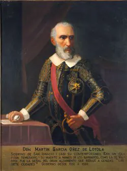

Desastre de Curalaba

A fines del siglo XVI, la guerra en el sur llevaba décadas. El gobernador Martín García Óñez de Loyola intentó consolidar el dominio español en el Wallmapu, pero el trabajo forzado y los abusos mantenían el descontento mapuche. El 23 de diciembre de 1598, mientras acampaba en Curalaba, a orillas del río Lumaco, fue sorprendido por fuerzas mapuche dirigidas por Pelantaro, junto a otros líderes como Anganamón. El gobernador y casi todos sus acompañantes murieron.
La victoria desató un alzamiento general. Entre 1599 y 1604, mapuche y huilliches destruyeron o forzaron el abandono de ciudades como Santa Cruz de Coya, Angol, La Imperial, Villarrica, Valdivia y Osorno. El Río Biobío se convirtió en una frontera de hecho, y la Corona organizó un ejército permanente financiado con el Real Situado.
Curalaba cierra el periodo de Descubrimiento y Conquista y abre una relación hecha de guerra, comercio y parlamentos, como el Parlamento de Quilín (1641), durante la Colonia. El nombre "desastre" refleja la mirada española; para el pueblo mapuche fue una victoria que le permitió conservar su autonomía por casi tres siglos, hasta la Ocupación de la Araucanía.
Versión para niños
A fines de 1598, el gobernador español Martín García Óñez de Loyola recorría el sur con sus soldados. Una noche acamparon en Curalaba, junto a un río. Al amanecer, guerreros mapuche dirigidos por Pelantaro los sorprendieron y los vencieron. El gobernador murió. Después de esa victoria, el pueblo mapuche se levantó en todo su territorio y los españoles tuvieron que abandonar casi todas sus ciudades al sur del Río Biobío. Así, los mapuche recuperaron su tierra por mucho tiempo.
Para maestros
Nivel sugerido: 5° básico
Objetivo: Explicar por qué Curalaba marcó el fin de la conquista y el nacimiento de la frontera del Biobío, reconociendo las distintas miradas sobre el hecho.
Preguntas para la clase:
- ¿Por qué los españoles lo llaman "desastre" y los mapuche, victoria?
- ¿Qué cambió en el sur de Chile después de Curalaba?
- ¿Qué significa que un río se convierta en frontera?
Actividad (20–30 min): En un mapa del centro-sur de Chile, los estudiantes ubican el río Biobío y las ciudades fundadas por los españoles al sur de él. Marcan con otro color las que fueron abandonadas después de 1598 y conversan sobre cómo cambió el mapa del territorio.
Fuentes sugeridas: Memoria Chilena; Biblioteca Nacional Digital; Museo Histórico Nacional.
Objetivos de Aprendizaje (Currículum Nacional)
- 5° básico · HI05 OA 02 Describir el proceso de conquista de América y de Chile … algunas expediciones y conflictos bélicos, y la fundación de ciudades
- 5° básico · HI05 OA 07 Explicar y dar ejemplos de las distintas formas en las que españoles y mapuches se relacionaron … resistencia mapuche y guerra de Arauco
- 8° básico · HI08 OA 12 … las formas de convivencia y los tipos de conflicto que surgen entre españoles, mestizos y mapuches como resultado del fracaso de la conquista de Arauco
Personajes
Revisión humana pendiente. Cómo se revisa · Reportar un error
Cómo citar: Historia de Chile. (2026). Desastre de Curalaba. En Historia de Chile: atlas y línea de tiempo. https://moises-salgado.github.io/historia-de-chile/momento/desastre-de-curalaba.html